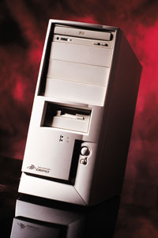
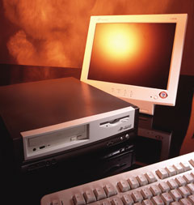
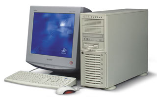
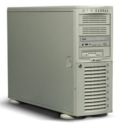
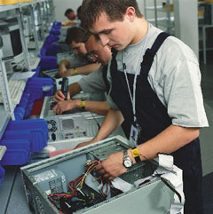

Андрей Ездаков
Цены и характеристики моделей даны на момент написания статьи - май 2003 г.
Современный офис как коммерческой структуры, так и государственного учреждения невозможно представить себе без компьютерной техники. Основную нагрузку здесь, как и раньше, несут на себе привычные "труженики" - настольные ПК. Конечно, во всем мире растет процент ноутбуков, тонких клиентов и мобильных устройств, но пока настольные решения составляют более половины всех продаваемых компьютеров. Поэтому и ведущие мировые производители, представленные на отечественном рынке, и множество российских компаний предлагают пользователям широкий выбор конфигураций настольных ПК.
Одним из таких поставщиков недавно стало DEPO (http://www.depo.ru), подразделение компании "Дилайн" в структуре группы компаний IBS, занимающееся поставками компьютерной техники корпоративным клиентам. Первые официальные продажи компьютеров под торговой маркой DEPO начались осенью прошлого года.
Компания прошла несколько этапов формирования собственного производственного брэнда. DEPO начинала в 1999 г. с продаж широкого ассортимента компьютерной и офисной техники известных производителей корпоративным клиентам через каналы электронной торговли. Затем последовал "пробный шар" сборочного производства ПК. В 2000 году в списке предлагаемых DEPO товаров появились так называемые white-boxes - базовые платформы для сборки компьютеров. В состав "коробки" входили корпус, системная плата, процессор и другие комплектующие, необходимые для сборки полнофункционального системного блока. Все компоненты white-boxes проходили входной контроль компании, поэтому такая продукция пользовалась устойчивым спросом.
Однако реальный рост объемов продаж мог дать только выпуск компьютеров под собственной торговой маркой с организацией всего необходимого окружения: логистики, каналов поставок, службы поддержки, сервисных центров и т. д. Руководство "Дилайн" приняло решение об организации необходимой инфраструктуры производства, продажи и сопровождения продукции под товарным знаком DEPO. В реализации программы компании помог опыт, накопленный как непосредственно при работе с white-boxes, так и за все время существования различных подразделений холдинга IBS. В результате осенью 2002 г. на российском рынке появились первые ПК марки DEPO.
Сейчас компания реализует порядка 6,5 тыс. компьютеров различных модификаций в месяц и предлагает корпоративным клиентам - а именно на них ориентированы все продуктовые линейки DEPO - широкий ассортимент корпоративных рабочих мест (КРМ), от настольных ПК до двухпроцессорных рабочих станций и разнообразных серверов. Значительная часть продаж осуществляется по уже проверенному каналу электронной торговли через Интернет.
Линейки настольных ПК
Основные "рабочие лошадки" офисов, настольные ПК, представлены в продуктовом ряду компании DEPO сразу тремя семействами: Neos, Myst и Race. Конкретные модели в семействах определяются двумя основными компонентами: шасси (дизайн и особенности корпуса) и системная плата (возможности создания необходимого функционала и потенциальная мощность компьютера). Модельные ряды формируются на основе анализа исследований рынка, получаемых компанией как из внешних источников, так и с помощью собственной экспертизы.
По ценовому диапазону специалисты компании также делят свои ПК на три категории: до 400 долл. - нижний сегмент рынка, от 400 до 700 долл. - средний сегмент и свыше 700 долл. - настольные компьютеры для специализированного применения. В указанную стоимость не входит цена монитора. С небольшими исключениями первой категории соответствуют ПК Neos, второй - Myst и третьей - машины серии Race с номерами, начинающимися с цифры до 5. Устройства Race 7XX и Race 5XX относятся уже к классу рабочих станций.
Большое семейство Neos
Серия 100
К семейству Neos относятся современные офисные ПК, ориентированные на удовлетворение традиционных потребностей бизнеса, т. е. спроектированные для работы со всеми стандартными офисными приложениями. Выпускаются модели трех серий - 100-й, 200-й и 300-й.
Младшая серия содержит две модели - Neos 105 и Neos 115 базовой стоимостью 265 и 333 долл. соответственно. Оба ПК размещаются в корпусе MidTower, в них используются процессоры Intel Celeron с тактовой частотой 1 ГГц и объемом кэш-памяти 256 Кбайт. Объем памяти SDRAM (тактовая частота шины 133 МГц) составляет 128 Мбайт, емкость жесткого диска типа EIDE со скоростью вращения 5400 об./мин -30 Гбайт. Обе модели оснащены интегрированной аудиосистемой SoundAC'97.
Если первая модель - это самый экономичный вариант полнофункционального корпоративного рабочего места, то вторая уже ориентирована на пользователей, предъявляющих более высокие требования к графической подсистеме. Поэтому вместо интегрированного ядра Trident Blade 2D/3D Integrated Video с 8 Мбайт выделяемой видеопамяти, как в Neos 105, в модели 115 используется Intel 3D with Direct AGP Integrated Video. На обе модели предоставляется гарантия производителя продолжительностью 1 год.
Серия 200
Практичные компьютеры 200-й серии предназначены для работы в корпоративных сетях с учетом более высоких требований к надежности и производительности КРМ. На их основе удобно создавать универсальные рабочие места для менеджеров среднего и высшего звена. Эта серия, также собираемая в корпусах типа MidTower, сейчас представлена четырьмя моделями: Neos 245e, Neos 250, Neos 255 и Neos 260.
|  | Самые продаваемые компьютеры компании DEPO - серия Neos 2XX.
|
В модели Neos 245e используются процессоры Intel Celeron (стандартно) или Pentium 4 с тактовой частотой от 1,7 (стандартно) до 2,4 ГГц, объем памяти PC2100 DDR SDRAM 200/266 (184-контактные модули) составляет от 256 Мбайт (стандартно) до 2 Гбайт. Набор микросхем Intel 845GL поддерживает частоту системной шины 400 МГц. В эти компьютеры может быть установлено два жестких диска IDE UDMA 100 емкостью от 30 до 80 Гбайт каждый (стандартно - один диск емкостью 30 Гбайт со скоростью вращения 7200 об./мин).
Интегрированное графическое ядро Intel Extreme Graphics 2D/3D Integrated Video с 64 Мбайт выделяемой видеопамяти позволяет снизить общую стоимость системы, обеспечивая при этом высокопроизводительную обработку трехмерной графики и хорошее качество изображения. Благодаря встроенной поддержке звука и интегрированному сетевому адаптеру Realtek 8100B 10/100 Мбит/с с поддержкой WOL систему можно установить в офисе без дополнительной модификации и расширения. В компьютерах Neos 245e также имеются два разъема высокоскоростного интерфейса USB 2.0. В комплект поставки стандартно входит клавиатура и мышь с функцией прокрутки изображения. Базовая стоимость модели - 367 долл.
Самая продаваемая модель компьютера компании DEPO - это ПК Neos 250, стоимостью в базовой комплектации 391 долл. Реализация таких компьютеров дает примерно треть всего объема продаж компании в штучном исчислении.
ПК Neos 250 представляет собой интегрированное решение на основе набора микросхем SIS651. В компьютерах этого типа применяются процессоры Intel Celeron (стандартно) или Pentium 4 с тактовой частотой от 1,7 (стандартно) до 3,06 ГГц с поддержкой технологии Hyper-Threading. Стандартный объем памяти типа PC2700 DDR SDRAM 333 составляет 256 Мбайт, частота системной шины равна 400 МГц. Объем жесткого диска - от 40 Гбайт (стандартно), скорость вращения 7200 об./мин.
В компьютерах Neos 250 используется встроенный высокопроизводительный графический адаптер Real 256-bit 3D/128-bit 2D Ultra-AGP II Integrated Video с выделением в ОЗУ до 64 Мбайт видеопамяти. Кроме того, в этих ПК имеются встроенная аудиосистема; слот расширения AGP4X для установки внешней видеоплаты (например, NVIDIA GeForce2 MX400 с 64 Мбайт собственной видеопамяти); сетевая карта и ряд внешних интерфейсов, не уступающий набору предыдущей модели.
В еще более высокопроизводительных компьютерах DEPO Neos 255, стоящих в базовой конфигурации 411 долл., используется набор микросхем Intel 845G и поддерживается тактовая частота системной шины 400/533 МГц. Прочие основные параметры этой модели те же, что и у Neos 250, за исключением интегрированной видеосистемы - как правило, в Neos 255 используется другая, Intel Extreme Grapics 2D/3D Integrated Video с 64 Мбайт выделяемой видеопамяти.
| Хит продаж DEPO в штучном исчислении - это компьютеры Neos 250 с базовой стоимостью 391 долл. Треть всего объема реализации продукции компании приходится на них. |
Последняя модель 200-й серии - Neos 260 базовой стоимостью 577 долл. представляет собой специальное решение с повышенными характеристиками надежности. При прочих базовых параметрах, одинаковых с Neos 250, в этих компьютерах используется более широкий набор графических и сетевых адаптеров, например, Fast Ethernet RealTek RTL8101L 10/100 Мбит/с WOL Integrated. К Neos 260 также применяются особые условия гарантийного обслуживания с выездом специалистов DEPO на место установки ПК (On site) сроком на 1 год.
Остальные компьютеры серии 2XX имеют стандартную двухлетнюю гарантию. Все модели снабжены блоком питания ATX 250W с датчиком контроля температуры и переменной скоростью вращения вентилятора. На них изначально устанавливается ОС из семейства Microsoft Windows и набор приложений Office 2000/XP. Максимальный срок гарантийного обслуживания за дополнительную плату может быть увеличен до 3 лет.
Серия 300
Более дорогая серия компьютеров Neos 3XX представлена всего двумя моделями: Neos 350 и Neos 355. Они тоже хороши в качестве универсальных рабочих мест для менеджеров среднего и высшего звена, но эта серия, монтируемая в корпусах типа MidTower, отличается более развитыми средствами мультимедиа.
В модели DEPO Neos 350 базовой стоимостью 631 долл. используется набор микросхем i845PE с поддержкой частоты шины 533 Мгц. В них устанавливаются процессоры Intel Pentium 4 с тактовой частотой от 2,4 (стандартно) до 3,06 ГГц и с поддержкой технологии Hyper-Threading. Объем памяти типа PC2700 DDR SDRAM - не менее 256 Мбайт, жесткого диска - не менее 40 Гбайт.
В компьютерах Neos 350 имеется встроенная аудиосистема с шестиканальным звучанием. Графическая система строится на основе внешних видеоплат NVIDIA или ATI, например, NVIDIA GeForce2 MX400 AGP4X.
Модель Neos 355 имеет сходные параметры, но в ней используется набор микросхем SIS655/SIS963 с поддержкой технологии Hyper-Threading и двухканальная архитектура памяти DDR333 с пропускной способностью до 5,4 Гбит/с. Поэтому такие компьютеры несколько дороже: 659 долл. в базовой комплектации.
Эта новая серия ПК семейства Neos предназначена для миграции на нее (при необходимости) пользователей с более дорогих и мощных компьютеров семейства Race. На обе модели 300-й серии предоставляется бесплатная трехлетняя гарантия компании DEPO.
Элегантное семейство Myst
Семейство компьютеров Myst отличает красивый, современный, стильный дизайн. Компактный корпус типа Slim толщиной всего 9 см выполнен в оригинальной гамме светло- и темно-серого цвета. Малогабаритный корпус сочетается с высокой степенью интеграции компонентов и полнофункциональностью этих устройств как офисных ПК. Возможность же не только горизонтальной, но и вертикальной установки корпуса позволяет органично вписывать компьютеры Myst даже в очень сильно ограниченное пространство офисного помещения.
|  | Корпоративный стандарт компании "Дилайн" - компьютеры Myst 245e.
|
Это элегантное семейство представлено всего двумя моделями: Myst 245e и Myst 250. Модель Myst 245e де-факто становится сейчас корпоративным стандартом всего холдинга "Дилайн". В этом ПК базовой стоимостью 429 долл. используется набор микросхем Intel 845GL и интегрированная графическая система Intel Extreme Graphics 2D/3D Integrated Video с 64 Мбайт выделяемой видеопамяти. Модель же Myst 250 базируется на наборе микросхем SIS650 и встроенном высокопроизводительном графическом адаптере Real 256-bit 3D/128-bit 2D Ultra-AGP II Integrated Video с выделением до 64 Мбайт видеопамяти. Стоимость второй модели в базовой комплектации на несколько долларов больше.
| Небольшой, элегантный, полнофункциональный офисный компьютер Myst 245e выполнен в 9-сантиметровом корпусе типа Slim. Эта модель сейчас становится корпоративным стандартом холдинга "Дилайн". |
Обе модели семейства Myst могут оснащаться как процессорами Intel Celeron с тактовой частотой от 1,7 до 2,2 ГГц (стандартно 2,0 ГГц), так и Pentium 4 с тактовой частотой от 1,6 до 2,6 ГГц. В них используется память типа PC2100 DDR SDRAM/266 базовым объемом 256 Мбайт и только скоростные (7200 об./мин) жесткие диски емкостью от 30 до 80 Гбайт (стандартно 40 Гбайт). Кроме того, в стандартный комплект входит сетевой адаптер типа Fast Ethernet 10/100 и интегрированная аудиосистема SoundAC'97.
Низкопрофильный малогабаритный корпус типа Slim оснащен блоком питания ATX 200W с датчиком температуры и переменной скоростью вращения вентилятора. На ПК семейства Myst изначально устанавливается ОС семейства Microsoft Windows и набор приложений Office 2000/XP. Бесплатное гарантийное обслуживание всех компьютеров этого семейства осуществляется компанией DEPO в течение 3 лет.
Мощное семейство Race
Компьютеры семейства Race ориентированы на пользователей, предъявляющих повышенные требования к общей производительности системы и ее надежности. Они оснащаются высоконадежным 300-Вт блоком питания. Оригинальная конструкция корпуса ПК Race, соответствующая стандартам качества и безопасности Европейского союза, обеспечивает возможность установки и надежную фиксацию большого числа плат расширения. Она также позволяет быстро снимать и заменять жесткие диски и внешние приводы без помощи инструментов.
|  | Мощный настольный ПК семейства Race.
|
Для повышения уровня безопасности в компьютерах серии Race предусмотрена возможность установки замка и специальных средств мониторинга несанкционированного вскрытия корпуса. Кнопка включения этих ПК имеет блокировку от случайного нажатия. Серии Race 300 и 400 относятся к категории мощных ПК, а серии Race 500 и 700 - к категории рабочих станций.
Три модели 300-й серии - Race 350, Race 380 и Race 390 - выполнены в корпусах типа MidTower. В них устанавливаются высокоскоростные жесткие диски объемом от 40 до 120 Гбайт, а срок гарантийного обслуживания составляет 3 года.
ПК Race 350 базируются на наборе микросхем Intel 845GE/ICH4. В них устанавливается процессор Intel Celeron с частотой от 1,7 до 2,2 ГГц или Pentium 4 с частотой от 1,7 до 3,06 ГГц и память типа PC2700 DDR SDRAM 333 - от 256 Мбайт до 1 Гбайт. Помимо встроенной видеосистемы Intel Extreme Graphics 2D/3D Integrated Video в этих компьютерах могут использоваться внешние видеоплаты серии NVIDIA GeForce4. Аудиосистема - интегрированный адаптер Realtek ALC650 с шестиканальным звуком. Кроме того, Race 350 оснащен сетевым адаптером Intel 82562ET 10/100.
В более дорогой модели Race 380 базовой стоимостью 776 долл. встроенных видео- и аудиосистем нет. В этом компьютере используются видеоплаты серии NVIDIA GeForce4, а передачу звуков на шесть колонок поддерживает адаптер C-Media CMI8738. Базовый набор микросхем компьютера Race 380 - Intel 850E/ICH2, процессор - Intel Pentium 4 с тактовой частотой от 1,7 до 3,06 ГГц. В этой модели используется высокоскоростная память типа Direct RDRAM, объем которой варьирует от 256 Мбайт в стандартной комплектации до 2 Гбайт.
Компьютер DEPO Race 390 стоимостью 939 долл. в стандартной комплектации построен на новейшем наборе микросхем Intel E7205, обеспечивающем поддержку двухканальной архитектуры памяти DDR SDRAM и технологии Hyper-Threading. Частота системной шины - 533МГц.
В этом ПК устанавливаются процессоры Intel Pentium 4 с тактовой частотой от 2,4 до 3,06 ГГц и объемом кэш-памяти 512 Кбайт и не менее 512 Мбайт оперативной памяти типа PC2100 DDR SDRAM. В устройстве имеются встроенные шестиканальный аудиоадаптер и сетевой контроллер, а также интерфейс USB 2.0. Даже в стандартной конфигурации Race 390 используется внешняя видеоплата типа DDR NVIDIA GeForce4 MX440T AGP8X с TV-выходом и 64 Мбайт собственной видеопамяти.
Модель 400-й серии Race 465 построена на наборе микросхем i865PE с поддержкой шины данных процессора 800 МГц и технологии Hyper-Threading, с двухканальной организацией работы памяти DDR400. Этот мощный компьютер базовой стоимостью 1511 долл. рекомендуется как для организации КРМ руководителей компаний, так и для системных администраторов, разработчиков ПО, проектировщиков баз данных, создателей аудио- и видеоконтента.
В компьютер устанавливается процессор Pentium 4 с тактовой частотой от 2,4 до 3,06 ГГц и кэш-памятью объемом 512 Кбайт и не менее 1 Гбайт оперативной памяти типа PC3200 DDR SDRAM 400. Жесткий диск типа EIDE имеет емкость не меньше 60 Гбайт. В Race 465 используется графический интерфейс на плате ATI Radeon 9500 AGP8X TV-out DVI-I со 128 Мбайт собственной DDR-памяти и интерфейсы жестких дисков ATA100/SATA, а кроме того, шесть портов стандарта USB 2.0.
Рабочие станции
Компьютеры Race 500-й и 700-й серий относятся уже к категории рабочих станций, т. е. особо мощных ПК, по уровню производительности и ресурсов обычно находящимся между настольными системами и "легкими" серверами. Серия Race 500 представлена тремя однопроцессорными моделями, а серия Race 700 - двумя двухпроцессорными.
|  | Рабочая станция DEPO Race.
|
Серия Race 500 - это рабочие станции Race 548, Race 550 и Race 580, построенные на базе процессоров Intel Pentium 4 с частотой до 3,06 ГГц, имеющие объем оперативной памяти до 2 Гбайт, частоту системной шины 533 МГц и дисковое пространство до 292 Гбайт. Рабочие станции данной серии ориентированы на использование в качестве настольных издательских систем, для работы с трехмерной графикой и программными приложениями типа САПР в архитектуре и строительстве.
В младших моделях Race 548 и 550 устанавливается мощная видеосистема на основе плат типа NVIDIA Quadro4 с 64 Мбайт собственной видеопамяти и (в стандартном варианте) один жесткий диск ATA-133 емкостью 40 Гбайт. В целом эти компьютеры близки по своим характеристикам, небольшие различия состоят в том, что в Race 550 имеется встроенный сетевой адаптер Intel 82562ET 10/100, а в Race 548 устанавливается более быстрый вариант видеоплаты AGP8X. Стоят эти модели в стандартной комплектации 1019 долл. (Race 548) и 1091 долл. (Race 5500).
Рабочие станции DEPO Race 580 базовой стоимостью 1324 долл. построены на наборе микросхем Intel 850E с использованием двухканальной памяти PC800 RDRAM. В них устанавливаются процессор Intel Pentium 4 с частотой до 3,06 ГГц и поддержкой технологии Hyper-Threading и специальная видеосистема на базе платы AGP4X ATI FireGL 8800 со 128 Мбайт собственной DDR-памяти.
Во всех рабочих станциях серии Race 500 могут быть установлены дополнительные жесткие диски. На них предустановлено необходимое ПО (ОС и офисные пакеты). Срок их гарантийного обслуживания - 3 года.
Состоящая из двух моделей серия двухпроцессорных рабочих станций Race 700 ориентирована на корпоративных пользователей, работающих с программами, требовательными к аппаратным ресурсам. Прежде всего их разумно использовать в таких областях, как САПР; системы для обработки трехмерной графики; программы создания аудио- и видеоконтента; аналитические системы для финансового и биржевого рынка; прикладные научные и статистические пакеты; ГИС.
Эти профессиональные масштабируемые решения построены на наборе микросхем Intel E7505 и двух процессоров Intel Xeon с частотой до 3,06 ГГц с поддержкой частоты системной шины 533 МГц и технологии Hyper-Threading. В шесть слотов DIMM устанавливается от 512 Мбайт до 12 Гбайт памяти типа PC2100 DDR SDRAM с функцией коррекции ошибок. Обе модели оснащены интегрированной аудиосистемой SoundAC'97, в них обеспечены широкие возможности выбора графической системы. Корпуса компьютеров серии Race 700 типа Tower имеют размеры 178x434x615 мм, они снабжены блоком питания мощностью 420 Вт с резервным вентилятором и датчиком контроля вскрытия корпуса.
В рабочие станции DEPO Race 720 базовой стоимостью 2309 долл. устанавливается до шести жестких дисков с интерфейсом IDE (ATA-133) емкостью от 40 до 200 Гбайт каждый, со скоростью вращения 7200 об./мин. Установка дополнительных контроллеров позволяет организовать из них RAID-массив любого уровня. Устройство также оснащено четырьмя портами интерфейса USB 2.0.
В модель Race 750 стоимостью 2648 долл. в стандартной конфигурации можно одновременно устанавливать до семи жестких дисков стандарта Ultra160/320 SCSI емкостью от 18 до 147 Гбайт каждый, со скоростью вращения 10 000 об./мин. Эта модель тоже позволяет организовывать RAID-массив любого уровня и предоставляет широкие возможности установки дополнительных плат, в частности, различных видеоадаптеров.
Срок гарантийного обслуживания рабочих станций серии Race 700 - 1 год. За дополнительную плату он может быть увеличен до 3 лет.
Производство и сервис
Производство компьютеров компания DEPO осуществляет на собственной территории в цехе площадью 350 м2. По словам сотрудников компании, при круглосуточном режиме работы можно ежедневно производить около 1000 различных компьютеров, в том числе некоторую часть из них - серверов. Уже в прошлом году компания DEPO сертифицировала весь производственный процесс и единую автоматизированную систему управления производством (собственная разработка холдинга, создававшаяся около полугода) по стандарту ISO 9001.
|  | Производство компьютеров компании DEPO.
|
Сам процесс производства разбит на несколько этапов, причем начальный и конечный этапы - это тестирование. Входное тестирование комплектующих и выходное тестирование готовой продукции носит 100%-ный характер. Часть операций, требующих наиболее высококвалифицированного труда, выполняется в стапельном режиме. Другая же часть, которая не требует участия специалистов, перенесена на конвейер. Таким образом, весь цикл сборки компьютеров осуществляется в смешанном стапельно-конвейерном производственном процессе, поддерживающем распараллеливание работ по разным моделям компьютеров.
Компания придерживается принципа выпуска компьютеров исключительно под заказ и потому предоставляет пользователям большие возможности изменения базовой конфигурации модели. Однако все эти изменения должны находиться в рамках допустимых сочетаний комплектующих, которые определяются по результатам тестовых исследований, проводимых специальной группой НИОКР. DEPO обязуется выполнить заказ в течение трех рабочих дней. После подбора необходимой конфигурации заказчик получает возможность выбрать один из девяти вариантов гарантийного обслуживания.
| По мнению специалистов DEPO, успех продаж компьютеров примерно в равной степени зависит от трех компонентов: функциональности и качества самого изделия; разумной цены на него; правильно организованного сервиса и сопровождения изделия во время всего его жизненного цикла. |
Гарантийное и послегарантийное обслуживание техники DEPO осуществляется через развитую сервисную сеть, которая обслуживается отдельной компанией, выигравшей соответствующий тендер осенью 2002 г. Эта сеть включает около 130 сервисных центров, расположенных в 79 регионах страны. В ней действует единый по всей России срок обслуживания - 5 дней. Через эту же сеть, при необходимости, корпоративный клиент может осуществить модернизацию своих компьютеров. Сервисная сеть, как и основное производство, сертифицирована по стандарту ISO 9001.
Редакция благодарит Дмитрия Парфенова, Надежду Харитонову и других сотрудников компании DEPO за помощь при подготовке материала.